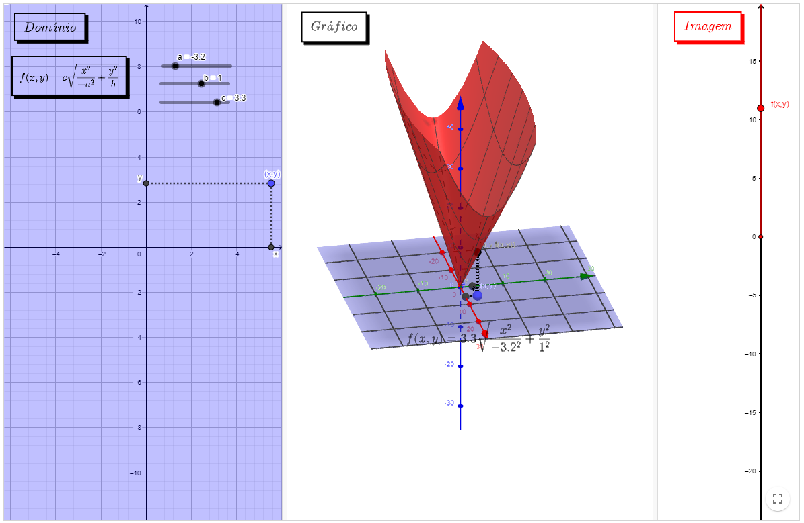
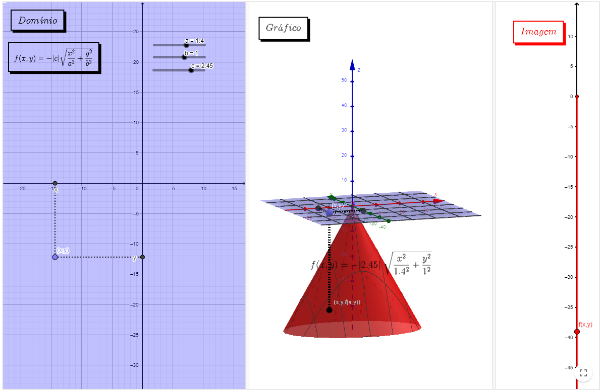

Funções escalares de várias variáveis
Domínio, imagem e gráfico
A disciplina de Cálculo II-B trata das funções vetoriais de várias variáveis. $$f: D \subset \mathbb{R}^{\mathrm{n}} \longrightarrow \mathbb{R}^{\mathrm{m}}$$
$$\left(x_{1}, \ldots, x_{n}\right) \in D \longmapsto w=f\left(x_{1}, \ldots, x_{n}\right) \in \mathbb{R}^{\mathrm{m}}$$
Quando $n=m=1$, trata-se de uma função real de uma variável (estudada em Cálculo I-A). Quando $m$ é igual a 1 e $n$ é maior que 1 , diz-se que é uma função real de n
variáveis ou uma função escalar. Quando $n=1$ e $m>1$, significa que é uma função vetorial de n variáveis.
Estudaremos os conceitos de limite, continuidade e derivada dessas funções.
Exemplos de funções na ciência e na engenharia
Uma função de várias variáveis reais é uma correspondência que associa um ponto de \(\mathbb{R}^{n}\) com exatamente um número real. Ela aparece naturalmente
na ciência e na engenharia. Por exemplo:
- A área de um retângulo de lados \(x=a\) e \(y=b\): A(a,b)=ab
- O volume de um cone circular de radio da base \(r\) e algura \(h\): \(V(r,h)=\frac{1}{3}\pi r^2 h\)
- Pressão de um gás: \(P(T,V)=k\frac{T}{V}\)
- A distância de um ponto à origem: \(D(x,y,z)=\sqrt{x^2+y^2+z^2}\)
- Equação de uma onda: \(g(x,y)=\sin{(x+cy)+\cos{(x+cy)}}\)
- Uma tabela de valores
Essas funções podem ser de vários tipos: polinomiais, racionais, exponenciais, logarítmicas, trigonométricas, etc. Observe que a função área do retângulo e a função volume do cone são polinomiais, enquanto a função pressão é racional. Já a função distância é composição do polinômio \(x^2+y^2+z^2\) com a função raíz \(f(x)=\sqrt{x}\,\) (a qual é uma função de uma variável real).
Os elementos básicos de uma função são o conjunto domínio (os pontos onde a expressão faz sentido ou input do problema), o conjunto imagem (os valores que devolve a experssão ou output do problema) e o gráfico (produto cartesiano domínio x imagem). Cada um desses conjuntos fornecem informações relevantes para entender o problema original e assim poder estrair conclusões relevantes.
Caderno base da matéria
Videoaulas
Exemplos
Recursos computacionais
Nos recursos abaixo é possível observar algumas funções escalares polinomiais com duas variáveis, algumas funções racionais e funções escalares básicas.
Obs: Sugerimos que ative uma função por vez, para uma melhor visualização do esboço. Para isso, desative a caixa clicando novamente antes de prosseguir para uma nova função.
Polinomiais
Livro Geogebra
Exemplos básicos I
Livro GeogebraNo recurso abaixo é possível observar que, através do isolamento de uma variável e sua restrição para valores positivos ou negativos, é possível gerar uma função escalar de várias variáveis a partir de uma Superfície Quádrica (apresentada no capítulo 4 dessa obra).
Obs: No applet abaixo as barras deslizantes referem-se aos coeficientes das funções. Para uma melhor compreensão, ative a caixa de uma função e observe o que ocorre ao variar os valores de a, b e c.
Exemplos básicos II
Livro Geogebra
Definição
Observe os exemplos a seguir, neles é possível observar o domínio a esquerda, o esboço da função ao centro e o subconjunto da reta real que forma a imagem a direita. No domínio, as barras deslizantes definem os valores embutidos na função. No gráfico, é possível manipular o ponto (x,y) a esquerda e observar a coordenada (x,y,z) percorrer a superfície.
Obs: Caso o ponto (x,y) retorne um ponto (x,y, f(x,y)) que não apareça na superfície, afaste o gráfico central para uma melhor visualização.
Exemplo I
Livro Geogebra
Exemplo II
Livro Geogebra Exemplo III
Livro Geogebra Exemplo IV
Livro Geogebra
Exemplo V
Livro Geogebra